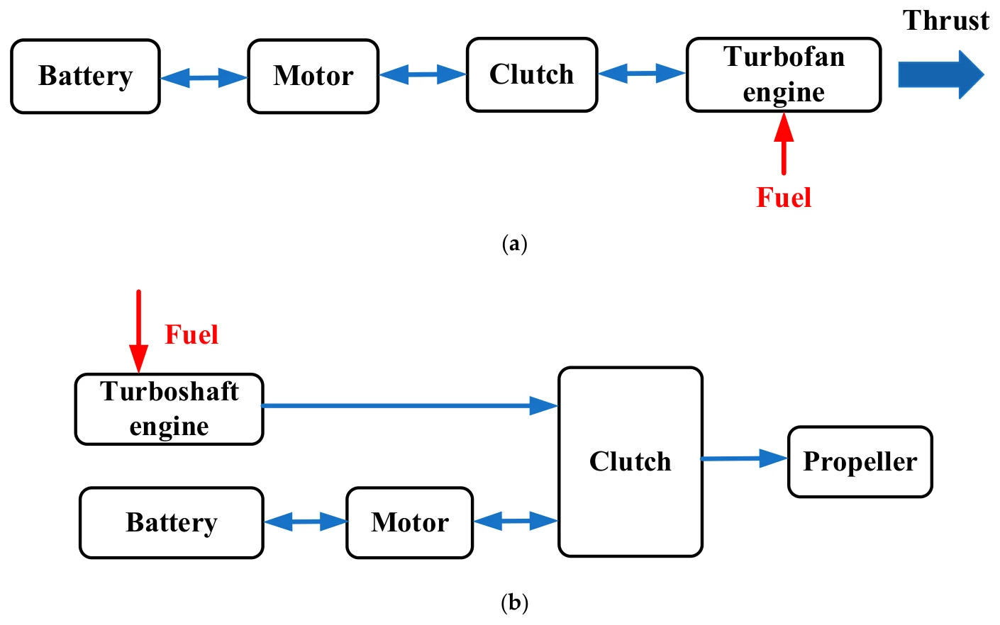
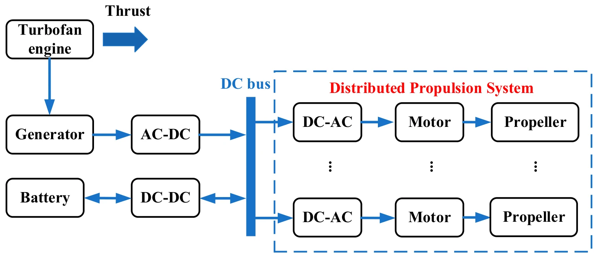
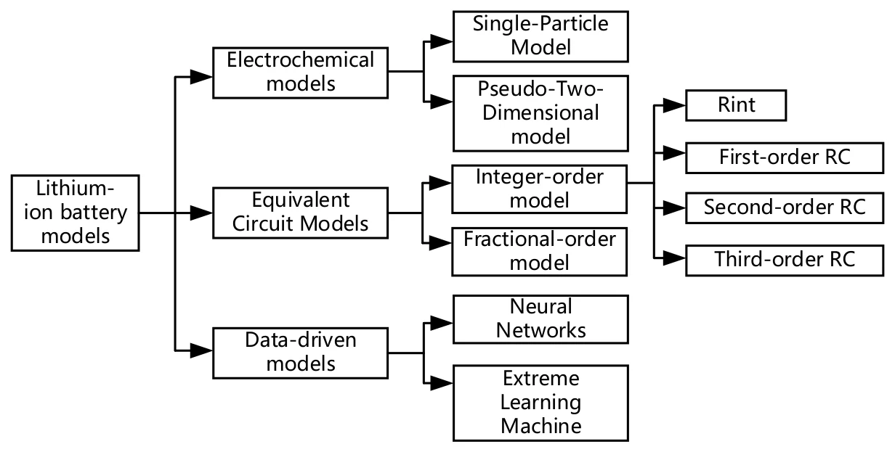
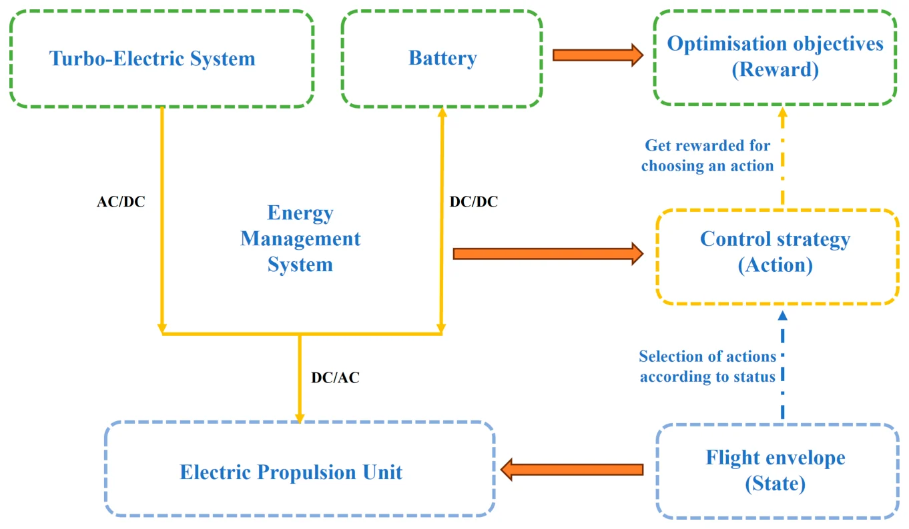

EMS-0 · Review · 2025
A Review of Hybrid-Electric Propulsion in Aviation: Modeling Methods, Energy Management Strategies, and Future Prospects
综述：航空混合电推进的建模方法、能量管理策略与未来展望（中文意译）
* Corresponding authors.
Aerospace 2025, 12, 895 Open access · CC BY 4.0
Received 8 September 2025 · Revised 25 September 2025 · Accepted 30 September 2025 · Published 3 October 2025
DOI: 10.3390/aerospace12100895 Publisher page Official PDF
Keywords hybrid-electric propulsion; long-endurance eVTOLs; modeling; energy management
Abstract
摘要
Aviation is under increasing pressure to reduce carbon emissions in conventional transports and support the growth of low-altitude operations such as long-endurance eVTOLs. Hybrid-electric propulsion addresses these challenges by integrating the high specific energy of fuels or hydrogen with the controllability and efficiency of electrified powertrains. At present, the field of hybrid-electric aircraft is developing rapidly. To systematically study hybrid-electric propulsion control in aviation, this review focuses on practical aspects of system development, including propulsion architectures, system- and component-level modeling approaches, and energy management strategies. Key technologies in the future are examined, with emphasis on aircraft power-demand prediction, multi-timescale control, and thermal integrated energy management. This review aims to serve as a reference for configuration design, modeling and control simulation, as well as energy management strategy design of hybrid-electric propulsion systems. Building on this reference role, the review presents a coherent guidance scheme from architectures through modeling to energy-management control, with a practical roadmap toward flight-ready deployment.
Overview
简要介绍
这篇综述是整个系列的研究背景。面对常规运输航空的减碳压力，以及长航时 eVTOL 等低空应用的发展需求，文章从系统开发的实际环节出发，把航空混合电推进分成“构型—建模—能量管理控制”三个层次进行梳理。
构型部分比较了油–电混动、氢–电混动，以及串联、并联、串并联三类架构，并汇总了典型混动项目的构型与部件性能（原文表 1、原文表 2）。建模部分区分了适合快速方案权衡和控制器原型开发的系统级功率流模型，以及用于识别运行边界、电–热瓶颈和适航相关动态的物理机理模型，并对锂离子电池模型进行了分类（原文表 3；本页图 7）。
能量管理部分按三条主线展开：确定性规则与模糊规则等规则类方法；DP、PMP、GA/PSO 等全局优化和 ECMS、MPC 等实时优化方法；以及以 DQN、DDPG 为代表的强化学习方法。文章比较了各类方法的优缺点（原文表 5），并按构型梳理了它们在航空混动系统中的应用进展（原文表 7、原文图 20）。
展望部分提出三个优先方向：高精度、低延迟的推进功率需求预测；协调慢速能量分配与快速电气调节的分层多时间尺度能量管理；以及发动机、电机和电力电子之间的热–能耦合管理。结论建议，在近期面向适航的能量管理基线中，学习类方法宜以辅助（advisory）角色使用。
Figures
混动构型与模型图
本页只展示混动构型图和模型框图，不展示实验结果图表；完整内容见正式出版论文（DOI: 10.3390/aerospace12100895）。图片截取自已发表论文，图题保留原文英文，下附简短中文说明，点击可查看原图。
混动构型

Figure 1. Oil–battery hybrid. (Abbreviations and elements. AC–DC: rectifier; DC–DC: DC converter; DC–AC: inverter; DC bus: common high-voltage DC link. Aeroengine: gas-turbine prime mover; Generator: engine-driven electrical generator; Battery: Li-ion pack with BMS; Distributed Propulsion System: multiple motor–inverter–propeller units sharing the DC bus. Dots: quantity; Oil-battery hybrid power system: combination of aeroengine and battery; Arrows denote nominal power-flow direction).
油–电混动：发动机经发电机、整流器接入直流母线，电池经 DC–DC 并网，母线驱动多个电机–螺旋桨单元。
Reproduced from Yu, F.; Chen, J.; Gao, P.; Kong, Y.; Sun, X.; Wang, J.; Chen, X. Aerospace 2025, 12, 895. https://doi.org/10.3390/aerospace12100895. © 2025 by the authors, CC BY 4.0.
![EMS-0 Figure 2. Hydrogen–battery hybrid. (Abbreviations and elements. DC–DC: DC converter; DC–AC: inverter; DC bus: common high-voltage DC link. Aeroengine: gas-turbine prime mover; Generator: engine-driven electrical generator; Li-ion Battery: Li-ion pack with BMS; Distributed Propulsion System: multiple motor–inverter–propeller units sharing the DC bus. Dots: quantity; Energy Storage System (ESS): combination of Fuel-cell stack (FC) and Li-ion battery interfaced via DC–DC; Arrows denote nominal power-flow direction).](../figures/ems-0/ems-0-fig2.webp)
Figure 2. Hydrogen–battery hybrid. (Abbreviations and elements. DC–DC: DC converter; DC–AC: inverter; DC bus: common high-voltage DC link. Aeroengine: gas-turbine prime mover; Generator: engine-driven electrical generator; Li-ion Battery: Li-ion pack with BMS; Distributed Propulsion System: multiple motor–inverter–propeller units sharing the DC bus. Dots: quantity; Energy Storage System (ESS): combination of Fuel-cell stack (FC) and Li-ion battery interfaced via DC–DC; Arrows denote nominal power-flow direction).
氢–电混动：燃料电池与锂电池经 DC–DC 接入公共直流母线。
Reproduced from Yu, F.; Chen, J.; Gao, P.; Kong, Y.; Sun, X.; Wang, J.; Chen, X. Aerospace 2025, 12, 895. https://doi.org/10.3390/aerospace12100895. © 2025 by the authors, CC BY 4.0.

Figure 5. Parallel Hybrid System Configuration. (a) Parallel hybrid turbofan configuration; (b) Parallel hybrid turboshaft configuration.
并联混动的涡扇 (a) 与涡轴 (b) 两种构型。
Reproduced from Yu, F.; Chen, J.; Gao, P.; Kong, Y.; Sun, X.; Wang, J.; Chen, X. Aerospace 2025, 12, 895. https://doi.org/10.3390/aerospace12100895. © 2025 by the authors, CC BY 4.0.

Figure 6. Series-Parallel Hybrid System Configuration. (Abbreviations and elements. AC–DC: rectifier; DC–DC: DC converter; DC–AC: inverter; DC bus: common high-voltage DC link. Generator: engine-driven electrical generator; Battery: Li-ion pack with BMS; Distributed Propulsion System: multiple motor–inverter–propeller units sharing the DC bus. Dots: quantity; Arrows denote nominal power-flow direction).
串并联混动：涡扇直接产生推力，同时带动发电机向分布式推进系统供电。
Reproduced from Yu, F.; Chen, J.; Gao, P.; Kong, Y.; Sun, X.; Wang, J.; Chen, X. Aerospace 2025, 12, 895. https://doi.org/10.3390/aerospace12100895. © 2025 by the authors, CC BY 4.0.
系统与方法模型

Figure 7. Classification of Lithium-Ion Battery Modeling.
锂离子电池模型分为电化学模型、等效电路模型和数据驱动模型三类。
Reproduced from Yu, F.; Chen, J.; Gao, P.; Kong, Y.; Sun, X.; Wang, J.; Chen, X. Aerospace 2025, 12, 895. https://doi.org/10.3390/aerospace12100895. © 2025 by the authors, CC BY 4.0.

Figure 8. EMS framework.
能量管理系统的基本框架：以飞行包线为状态、控制策略为动作、优化目标为奖励。
Reproduced from Yu, F.; Chen, J.; Gao, P.; Kong, Y.; Sun, X.; Wang, J.; Chen, X. Aerospace 2025, 12, 895. https://doi.org/10.3390/aerospace12100895. © 2025 by the authors, CC BY 4.0.
Reported Results
论文主要结论
- 规则类方法（确定性规则、模糊规则）鲁棒、适合低算力航电，但在复杂、时变的任务中容易饱和。
- 优化类方法可以提供基准最优解（DP/PMP）和近优的实时策略（ECMS/MPC），前提是模型和预测足够准确。
- 学习类控制器，特别是安全强化学习，在不确定条件下的适应潜力较大；前提是使用有代表性的任务数据训练、施加安全约束，并通过高保真模型和试验验证。
- 近期研究宜优先考虑并联和串并联构型；串联、涡轮电和分布式方案将随标准和热裕度成熟而逐步可行。
- 后续三项关键技术：推进功率实时预测、多时间尺度能量管理与控制、热–能耦合管理。
Citation & Rights
引用与版权
Yu, F.; Chen, J.; Gao, P.; Kong, Y.; Sun, X.; Wang, J.; Chen, X. Aerospace 2025, 12, 895. A Review of Hybrid-Electric Propulsion in Aviation: Modeling Methods, Energy Management Strategies, and Future Prospects. https://doi.org/10.3390/aerospace12100895
本文为 MDPI 开放获取论文，采用 CC BY 4.0 许可；本页图片依该许可注明出处后转载，全文请见期刊官方页面。本页数字均来自原论文，是对已发表结果的展示，不是新的实验或比较。
本页仅展示混动构型图和模型框图（图 1, 2, 5, 6, 7, 8），不收录实验结果图表；实验结果、表格及完整内容请见 正式出版论文。